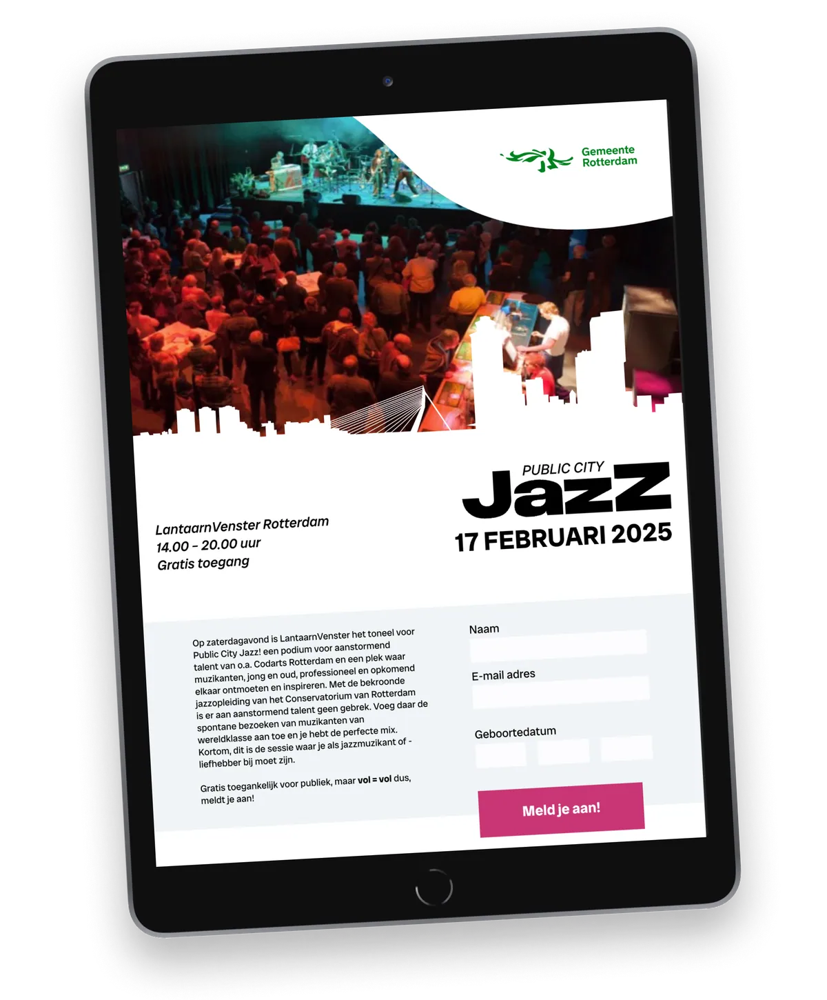
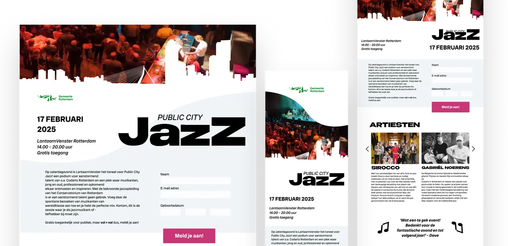

Public City Jazz A responsive event platform
- No.
- 10
- Year
- 2024
- Discipline
- UI Design
- Role
- Visual interface, responsiveness
- Tools
- Figma
- Format
- Tablet, iPhone, desktop
- Identity
- Municipality of Rotterdam

A responsive event platform for Public City Jazz, following the visual identity of the Municipality of Rotterdam.
The focus was on layout, hierarchy, and translating the energy of jazz into a clear and structured interface across multiple screen sizes.
Further reading
- View the design reflection → NL · PDF

Looking back
The brief was strict: the Municipality of Rotterdam’s house style, on three screen sizes. At first I held on to it too tightly, and leaned too much on my inspiration instead of generating my own ideas. My first motif, oversized quotation marks, had nothing to do with jazz, as my teacher and classmates pointed out.
I replaced it with the Rotterdam skyline and a piano, and turned the quotation marks into music notes. The most valuable feedback was simple: let my own creativity in, and look at my desktop design at 100%, the way a visitor actually sees it.